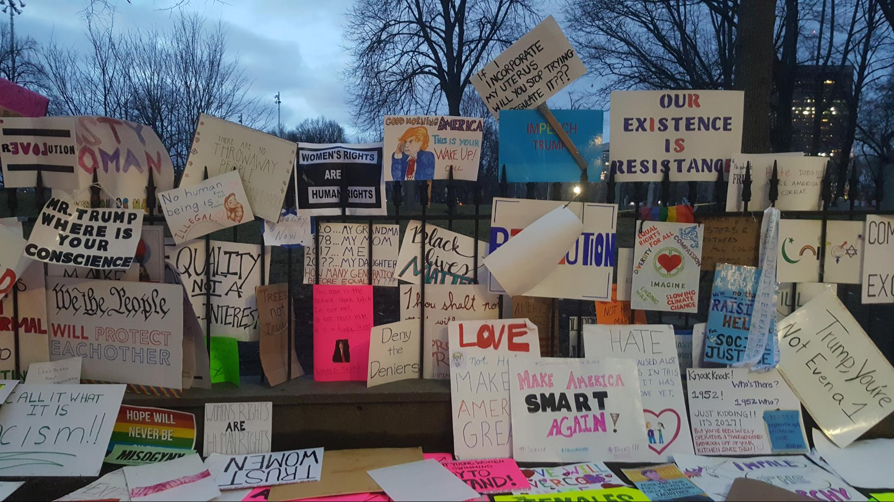
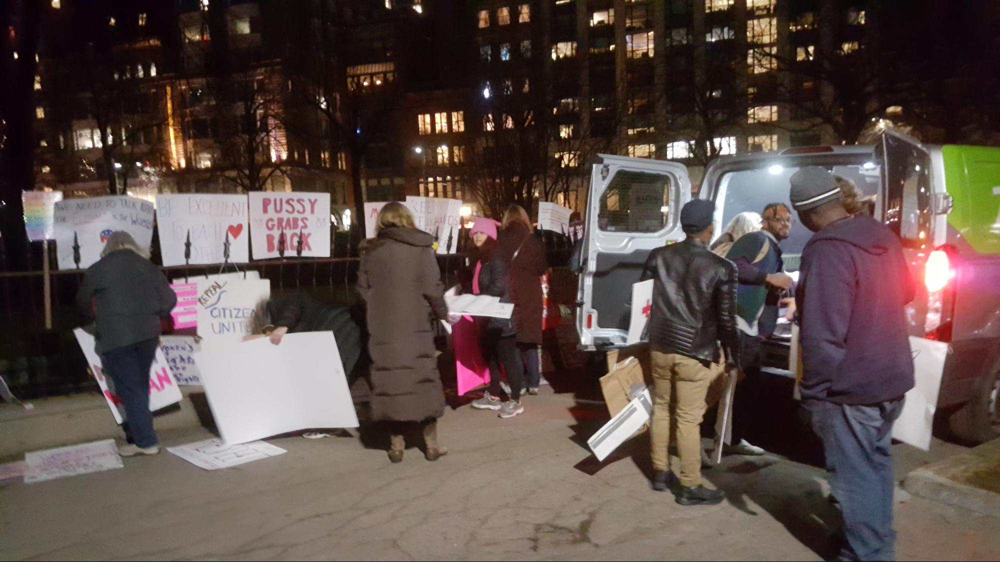
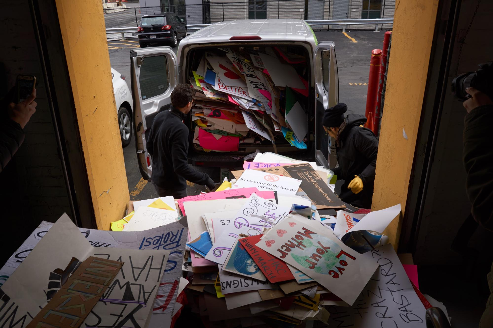
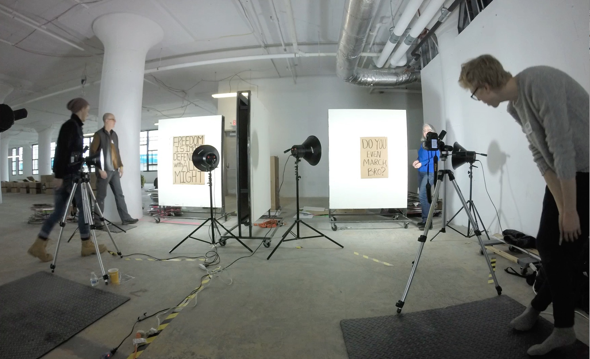
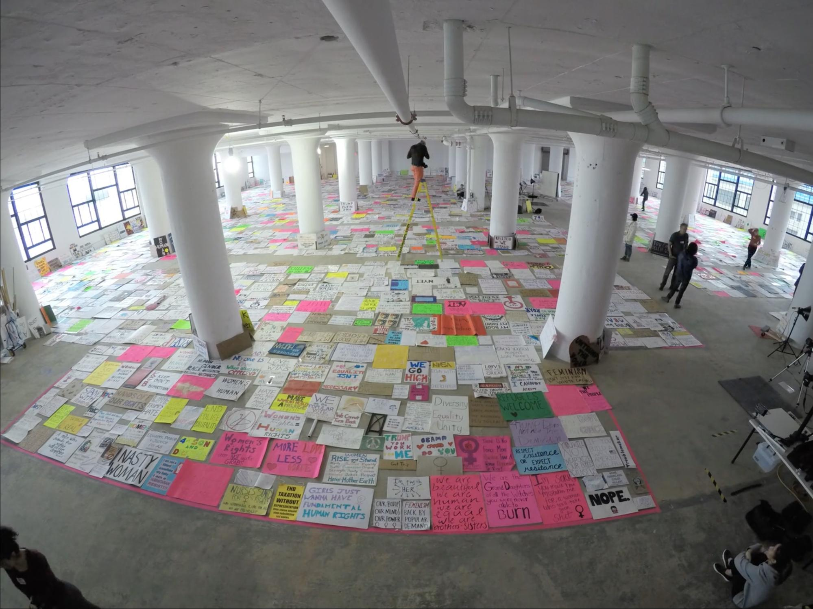

A Documentary Project
Dedicated to the Organizers and Participants
of the Boston Women’s March, January 21, 2017
Art of the March is an online archive and interactive presentation of protest signs and posters collected in the aftermath of the historic Boston Women’s March on January 21, 2017.
This website contains digital images of over 6000 signs placed by protesters on the iron fence of the Boston Commons old Central Burying Grounds and along its perimeter as the march ended. A trio of college professors asked city parks workers, who were prepared to clean the site and trash them, for permission to collect them and volunteers from the public joined in gathering them from the site and loading them into a rented van.
This collection provides a snapshot nearly complete sample of the signs brought to the protest in their full range of issues, emotions and visual expressions. The signs are handmade and unique, but at the same time connected through a rich web of cultural references, themes, memes, and visual styles. As the most extensive collection of contemporary protest signs representing a single event of this scale, it is a valuable reference resource for scholars, activists and people interested in social movements, civic media and vernacular design.
Beyond the diverse political leanings of those who participated in the Boston Women’s march, this collection reveals a wealth of information on contemporary civil society in an age of political polarization and where instant social communication is networked. The collection speaks for current political rhetoric, slogans, debates and concerns of civil society and splinter groups in the United States of America. It brings together an abundance of revelatory visual examples with which to study the voices and visions of social movements, analyze communication concepts, and preserve idiosyncratic expression in the era of social network media. It brings to light old and new aesthetics of personal, social and political strategies.
During a period of time while the signs and posters were stored a team of Northeastern University researchers organized and facilitated a weekend documentation event where volunteers from the university and the Boston area photographed and catalogued the posters. Research grants from Northeastern University allowed further sorting, tagging, analysis and categorization the digitized images. Designers, software developers and archivists collaborated with the research team to create various digital means to examine, sort and annotate the documents and images, resulting in this first public view of the entire collection.
 Arrangement of signs along the iron fence of the Central Burying Ground on the Boston Common
 Collection with on-site volunteers
 Unloading the rented van.
 Documentation and digitization event in April, 2017
 Digitization